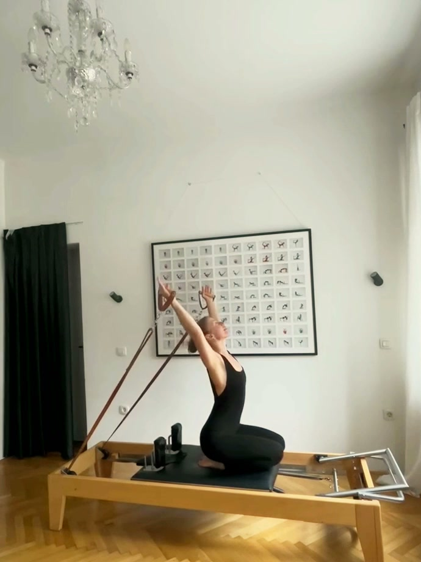
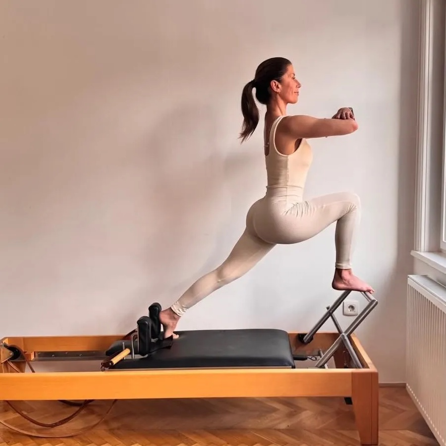
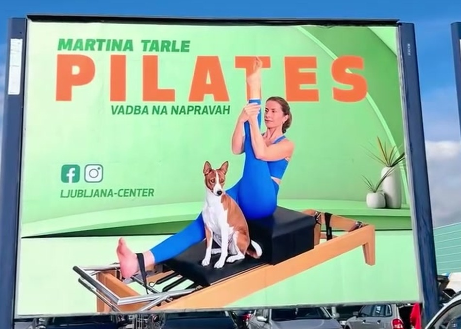

Martina Tarle: Pilates, vadba na napravah

Klasičen pilates na napravah. Individualno, v paru in za podjetja.
Ljubljana-center
Pilates ni trend. Je naložba v telo, ki nas nosi skozi življenje.
- Reformer
- Wunda Chair
- Cadillac
- Ladder Barrel
- Spine Corrector

O meni
Vedno v učenju, vedno v gibanju. Zate.
Sem Martina Tarle, inštruktorica klasičnega pilatesa na napravah. Svojo delovno pot sem začela pri dvajsetih in nekaj, ko sem v Domžalah odprla fitnes Fit Fit. Z leti sem našla svojo delovno ljubezen: pilates.
Za menoj je več kot 20 let učenja, pa se še vedno učim, saj tudi učiteljica potrebuje učitelja. Bolj ko spoznavam svoje gibanje in svoje telo, več različnih teles lahko učim dobrega, prilagojenega gibanja.
Šola in certifikati: za dopolnitev

Naprave
Pilates na napravah ni samo reformer.
Vsaka naprava ima svoj namen, skupaj pa ustvarjajo celovito pilates izkušnjo. V studiu te čakajo reformer, Wunda Chair, Cadillac, Ladder Barrel in Spine Corrector.
-
01Reformer
Paradni konj pilatesa. Odlična naprava za razvoj moči, stabilnosti in kontrole gibanja.
-
02Wunda Chair
Telesu ponudi povsem drugačen izziv. Zahteva več ravnotežja, natančnosti in zavedanja telesa, hkrati pa odpira nove možnosti za moč in koordinacijo.
-
03Ladder Barrel
Ne potrebujemo samo moči. Potrebujemo tudi mehkobo, pretočnost in lahkotnost gibanja. V ozadju: Cadillac.
-
04Spine Corrector
Lahko te učim, da se gibaš drugače, da dihaš polno, da se opazuješ in raziskuješ.
Oblike vadbe
Sama, v paru, doma ali z ekipo.
-
1 na 1
Individualno
Ura je samo tvoja. Vaje prilagodim tebi, ne tebe vajam, in spoštujem vsak napredek, tudi najmanjšega.
Nikoli ni prepozno: gospod pri več kot 70 letih je v dveh letih redne vadbe na reformerju spet našel gibljivost, ravnotežje in zaupanje v svoje telo.
-
1 + 1
V paru
Na reformer lahko prideta tudi dva. V paru se ne samo telovadi, ampak se ustvarjajo zgodbe.
-
Doma
Pri tebi doma
Nekaterim je ljubše, da vadijo z menoj doma: domače okolje, lažja sprostitev, nič stresa zaradi poti in manj odpovedanih terminov.
Res pa je, da doma ni pilates naprav in da je težje stopiti iz cone udobja.
-
Ekipa
Za podjetja
Aktivni odmor za ekipo: nekaj minut preprostih gibov in diha, brez napora in brez tekmovalnosti. Vodila sem ga za ekipo Triglava, zaposleni pa lahko z menoj vadijo tudi prek Zooma.
Cenik in termini: za dopolnitev
Tudi na dogodkih
Pilates vodim tudi za večje skupine. Tako je bilo na dogodku Etiketa Pilates Edit, kjer smo skupaj naredile nekaj dobrega za svoje telo in se družile med pilatesom in po njem.
Uvod v vadbo Vsako telo dobi svoj popravek Vajo najprej pokažem Skupaj smo močnejše
Misli o pilatesu
Telo ni sezonski projekt.
Je odnos. Vsak dan. Celo leto.
- Počasi kuriš in zato dlje gori. Ne podcenjuj moči počasnega gibanja.
- Moč pilatesa ni v številu ponovitev, temveč v kakovosti vsakega trenutka in zavestno izvedenem gibu.
- Motivacija je začetek. Navada je moč.
- Gibanje ni napor, je pogovor s telesom.
Pogosta vprašanja
Mit ali resnica: pilates podaljšuje mišice?
Mit. V fizičnem smislu mišic ne moremo podaljšati: dolge so toliko, kot smo se z njimi rodili.
Učitelji besedo »podaljševanje« kljub temu radi uporabljamo, ker je pilates tudi vadba za um. Vizualizacija pomaga, da se gibaš drugače: bolj lahkotno, povezano in kontrolirano, iz globokega centra telesa. Telo se začne spreminjati kot celota, predvsem mišični tonus, zato je videti »daljše«.
Kako izbrati inštruktorja?
Inštruktorjev nas je veliko. Eni so bolj glasni, drugi bolj tihi, eni dražji, drugi delijo popuste. Če bi iskala sama, bi izbrala takega, ki:
- ima znanje: ve, kaj dela in zakaj,
- ima nasmeh, da so treningi prijetni in ne mučni,
- ima energijo, ki motivira in navdihuje,
- »sliši« tvoje telo in vaje prilagodi tebi, ne tebe vajam,
- je zanesljiv: drži obljube in pride pripravljen,
- te izziva, a ne preobremeni,
- spoštuje vsak napredek, tudi najmanjšega.
Ali so leta res pomembna?
Pri gibanju jih ne štejemo. Štejemo, kako se počuti telo, kako lahkotno se premika in kako samozavestno stoji. Nikoli ni prepozno, da telesu damo tisto, kar potrebuje.
Zakaj sploh potrebujem pilates?
Ker je odlična podpora pri vseh športih in v vsakdanu. Lažje tečeš, hitreje greš v hrib in bolje pripravljena stopiš na smuči.
Kontakt
Pokliči in se dogovoriva za prvi termin.
040 795 565- E-poštamartina.tarle99@gmail.com
- Instagram@tarle_martina
- StudioLjubljana-center Točen naslov: za dopolnitev